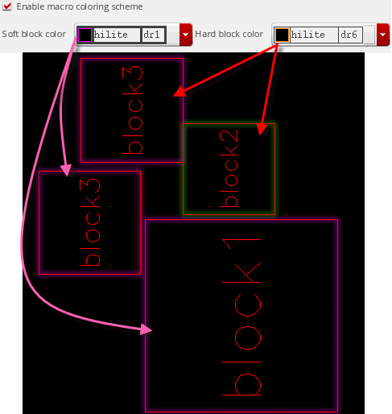
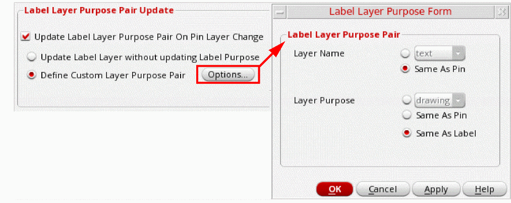

10
Setting Floorplan Options
This chapter covers the following topics:
Floorplan Global Options
The Floorplan – Floorplan Global Options menu item enables you to customize the layout design environment. Selecting this menu item displays the Floorplan Global Options form (Layout GXL Options form in IC6.1.8). You can use this form to set global options for either the current cellview or the current session.
Use the options in this form to perform the following tasks:
- Color Coding Hard and Soft Blocks
- Controlling Re-Generation of Instances, Pins, and PR Boundary
- Governing Pin Resize During Pin Snapping
- Respecting Layer Priority for Valid Routing Layers
- Specifying the Default Block Type
- Updating Label Layer Purpose Pairs
Color Coding Hard and Soft Blocks
Use the following color coding options in the Macro Coloring section to assign different highlight colors for hard and soft blocks so that they are visually distinguishable in the layout canvas:
-
Select the Enable macro coloring scheme check box to enable color coding of hard and soft blocks.
Corresponding environment variable: colorOrNot -
Select a highlight color for soft blocks from the Soft block color drop-down list.
Corresponding environment variable: softBlockColor -
Select a highlight color for hard blocks from the Hard block color drop-down list.
Corresponding environment variable: hardBlockColor -
Click OK or Apply to view the changes in the layout canvas.
The soft and hard blocks are highlighted in different colors, as shown above.
These visualization settings are not restricted to the current design. These settings are automatically applied to all layout cellviews that were open when you defined the color settings. To reset the settings, use either the options in the form or their corresponding environment variables.
Controlling Re-Generation of Instances, Pins, and PR Boundary
Use the Create Instances, Create Pins, and Create Boundary check boxes from the Generate Physical Hierarchy section to specify whether instances, pins, and the PR boundary need to be automatically re-created when the physical hierarchy is generated or the components and nets are updated.
These options provide a GUI alternative to using the initCreateInstances, initCreatePins and initCreateBoundary environment variables.
To know more about the Generate Physical Hierarchy command, see Generating a Physical Hierarchy.
To know more about the Update Components and Nets command, see
Governing Pin Resize During Pin Snapping
To specify whether pins need to be resized during pin snapping, select the Allow Pin Resizing option from the Pin Snapping section. For more information about pin snapping, see
Corresponding environment variable: allowPinResizing
Respecting Layer Priority for Valid Routing Layers
During pin optimization, pins are re-positioned and re-layered to obtain the shortest possible net length. The Respect layer priority for valid routing layers constraint on net option in the Pin Placement section specifies the layer priority to be followed while placing pins during pin optimization.
When this option is not selected (default state), the Pin Optimizer places pins on layers that are closest to the connected pin.
Example: Pin A is connected to top-level pin B. Valid layers from net PRO for pin A are (M1, M2, M5, M7). Pin B is located on layer M2.
The Pin Optimizer first tries to place pin A on M2 to enable the router to connect the two pins without any via insertions. If there are no slots available on M2, the Pin Optimizer tries to place pin A on M1, which is the layer closest to M2.
When the Respect layer priority for valid routing layers constraint on net option is selected, pins are optimized based on their layer priority. Layers are prioritized in the order in which they are listed.
Corresponding environment variable:
For more information about Pin Optimization, see Pin Optimization.
Specifying the Default Block Type
Floorplanner supports two types of blocks - custom and digital. Soft blocks can be assigned to either of these block types. Use the Default blockType (when unknown) option to specify the default block type for soft blocks when the assigned block type is not custom or digital. The default value is Custom.
The block type determines the pin and PR boundary placement during floorplanning, as described below:
- Custom - Pins and PR boundary are placed on the manufacturing grid.
- Digital - Pins are placed on routing grid, and PR boundary is placed on the placement grid.
- As-Is (XY Snap Spacing) - Pins and PR boundary are placed on the grid defined by the X Snap Spacing and Y Snap Spacing options in the Grid Controls section of the Display Options form. For information about these options, see Setting Up Grid Controls in Virtuoso Layout Suite L User Guide.
For information about setting the block type, see Setting the Block Type.
Corresponding environment variable:
SKILL function to set the placement grid information:
Updating Label Layer Purpose Pairs
When you run certain pin-related commands, such as the Pin Planner and Pin Optimizer, pins in the design are re-layered. Use the options in the Label Layer Purpose Pair Update section of the Floorplan Global Options from to control the re-layering of the associated pin labels.
To control the re-layering of pin labels, in the Label Layer Purpose Pair Update section, Update Label Layer Purpose Pair On Pin Layer Change is selected by default.
Define the label re-layering behavior by selecting one of the following options:
-
Update Label Layer without updating Label Purpose (default): Re-layers labels to match the pins, but their purposes remain unchanged.
Related Environment Variable: labelLayerPurposePair -
Define Custom Layer Purpose Pair: Lets you define the layer and purpose to which labels are to be moved. To specify custom layers and purposes:
- Select Define Custom Layer Purpose Pair.
-
Click Options to display the Label Layer Purpose form.
 -
Select one of the following Layer Name options to specify the layers to which the labels are to be moved:
-
Custom layer: Specifies the layer to which labels are to be moved. Irrespective of the pin layer, all labels are moved to the selected layer.
Related Environment Variable: pinTextLayer -
Same as Pin: Moves labels to the same layers as the pins.
Related Environment Variable: pinTextSameLayer -
Select one of the following Layer Purpose options to specify the purposes to be assigned to labels when their associated pins are re-layered:
-
Custom purpose: Specifies the purpose to be assigned to labels when the associated pins are re-layered.
Related Environment Variable: pinTextPurpose -
Same as Pin: Matches the label purpose to that of the pins after they are re-layered.
Related Environment Variable: pinTextSamePurpose -
Same as Label: Retains the original label purpose.
Related Environment Variable: sameLabelPurpose
When pins are re-layered with Update Label Layer Purpose Pair On Pin Layer Change not selected, labels remain unchanged. -
Custom purpose: Specifies the purpose to be assigned to labels when the associated pins are re-layered.
- Click OK.
-
Custom layer: Specifies the layer to which labels are to be moved. Irrespective of the pin layer, all labels are moved to the selected layer.
-
Select one of the following Layer Purpose options to specify the purposes to be assigned to labels when their associated pins are re-layered:
-
Custom purpose: Specifies the purpose to be assigned to labels when the associated pins are re-layered.
Related Environment Variable: pinTextPurpose -
Same as Pin: Matches the label purpose to that of the pins after they are re-layered.
Related Environment Variable: pinTextSamePurpose -
Same as Label: Retains the original label purpose.
Related Environment Variable: sameLabelPurpose
When pins are re-layered with Update Label Layer Purpose Pair On Pin Layer Change not selected, labels remain unchanged. -
Custom purpose: Specifies the purpose to be assigned to labels when the associated pins are re-layered.
- Click OK.
t, sameLabelPurpose takes precedence. This is irrespective of the pinTextPurpose setting.Block Annotations
During floorplanning, you can turn on block annotations to view textual information about the blocks. Block annotations are aligned to the top-left corner of the PR boundary of the blocks, and include the block instance names, master cellview information, area, and orientation values.
Any change made to the block is dynamically updated in the annotated information. For example, if a block is moved, the information text is also moved to the new location. Similarly, when a block shape is changed by stretching or chopping the block, the annotation values are dynamically updated.
To turn on block annotations, choose Floorplan – Block Annotations. The Block Annotations Options form is displayed. Use the options in this form to customize the information displayed in the block annotations. The Block Annotations form is available for both edit and read-only cellviews.
Setting Annotation Options
Use the options in the Annotations section to specify the information that is to be included in the block annotations.
- Set the Display Mode to specify whether the block annotations are to be displayed for All or Selected blocks.
- Select Instance name and Master LCV to display the relevant information in the block annotations.
- Select Area to display the total block area within the PR boundary. Select the required units:
- Shrink Factor specifies the factor by which each edge has to be shrunk. Specify a Shrink Factor to display the shrunk area. The shrunk area is only displayed in the annotation without changing any values in the design.
- Select Rotation to include the block orientation information in the block annotations.
Setting Display Options
Use the options in the Display Options section to customize the following text settings:
-
Text Size: Specifies the size of block annotations. Select one of the following options:
- Auto: Calculates the annotation size such that all annotations are inside the instance boundary.
- Custom: Lets you drag the slider to the required value.
Click Display to apply the size of annotations to the layout design. - Text Color: Select a Text Layer based on which the block annotation text is to be formatted.
Click Display to view and Remove to hide block annotations in the layout canvas.
Environment Variables
- blockAnnotationArea
- blockAnnotationAreaUnits
- blockAnnotationInstName
- blockAnnotationRotation
- blockAnnotationSelMode
- blockAnnotationTextLPP
- blockAnnotationTextSize
- blockAnnotationShrinkFactor
Return to top